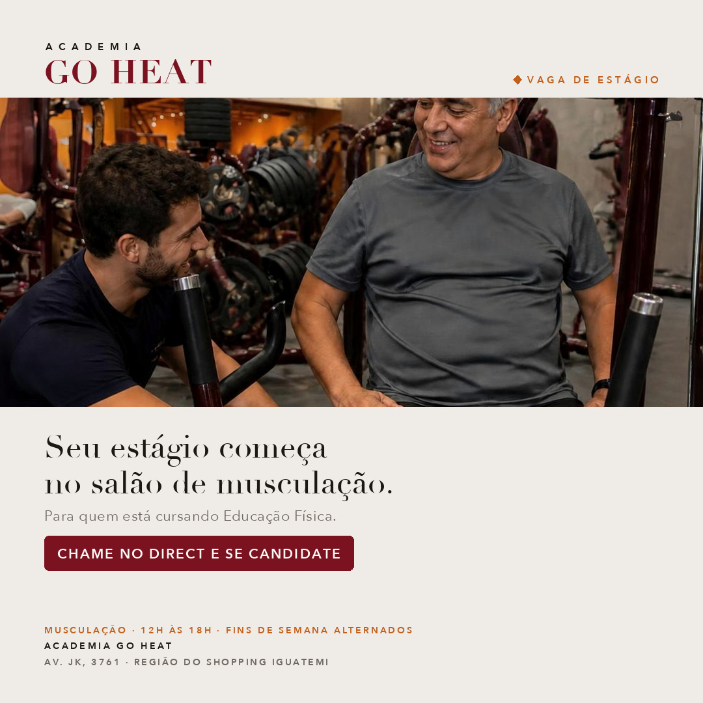
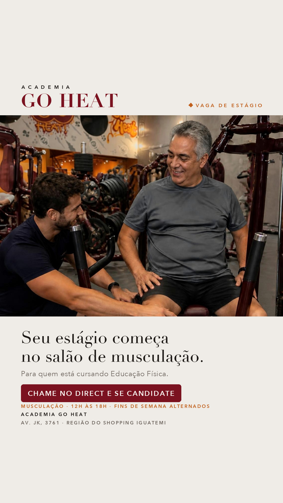
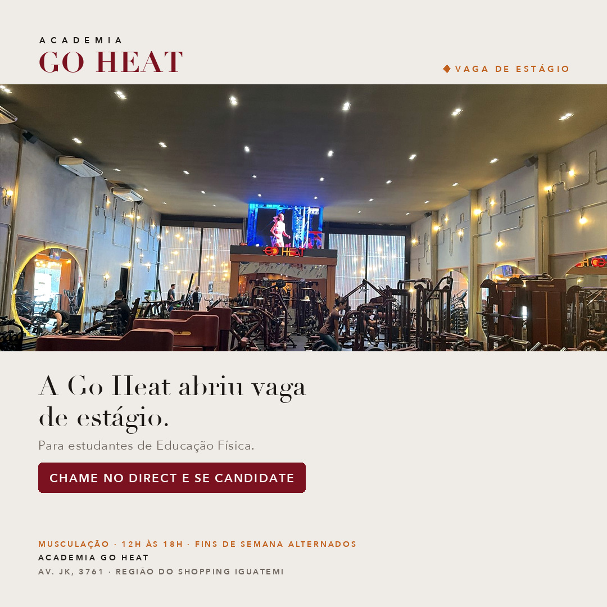
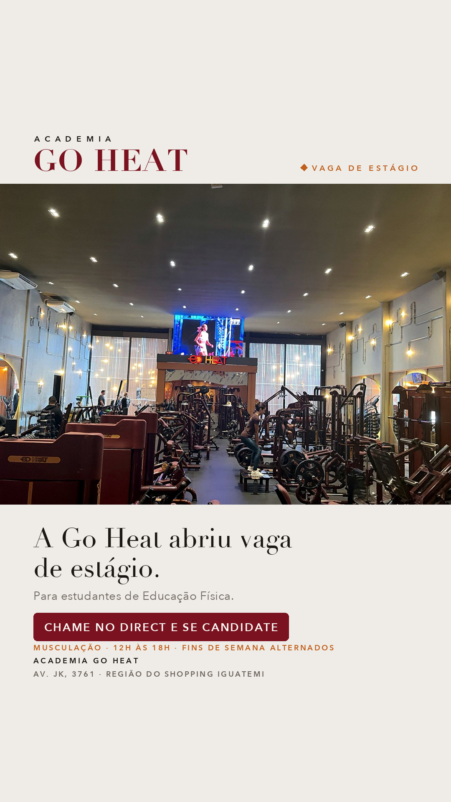
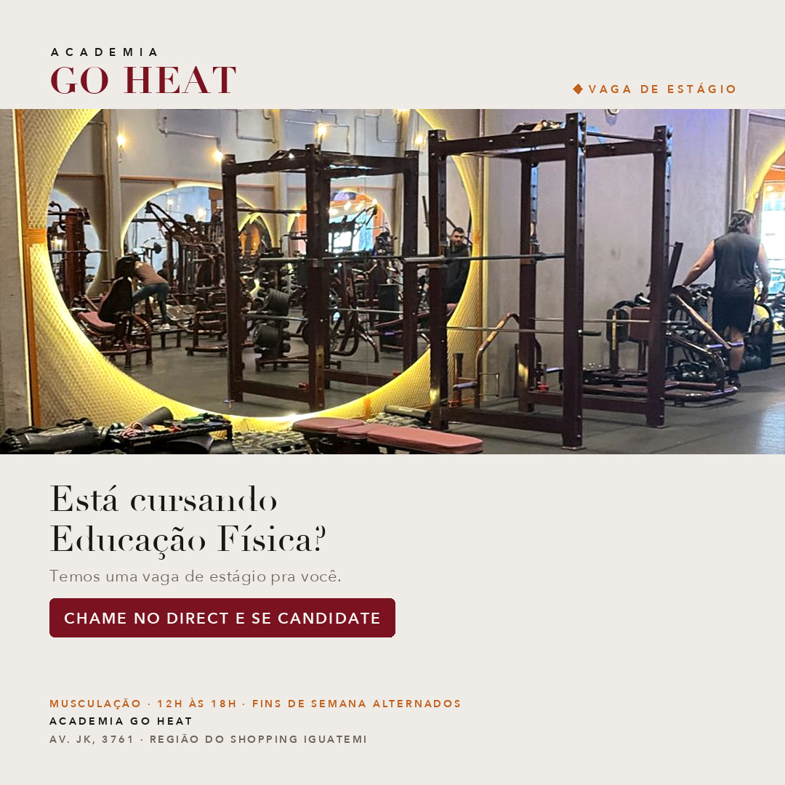
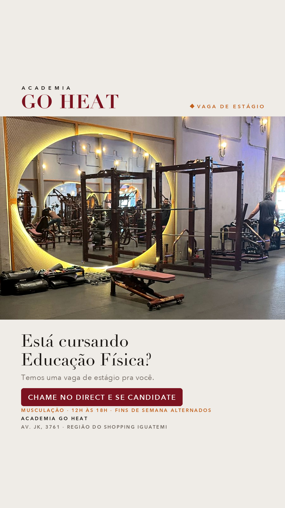
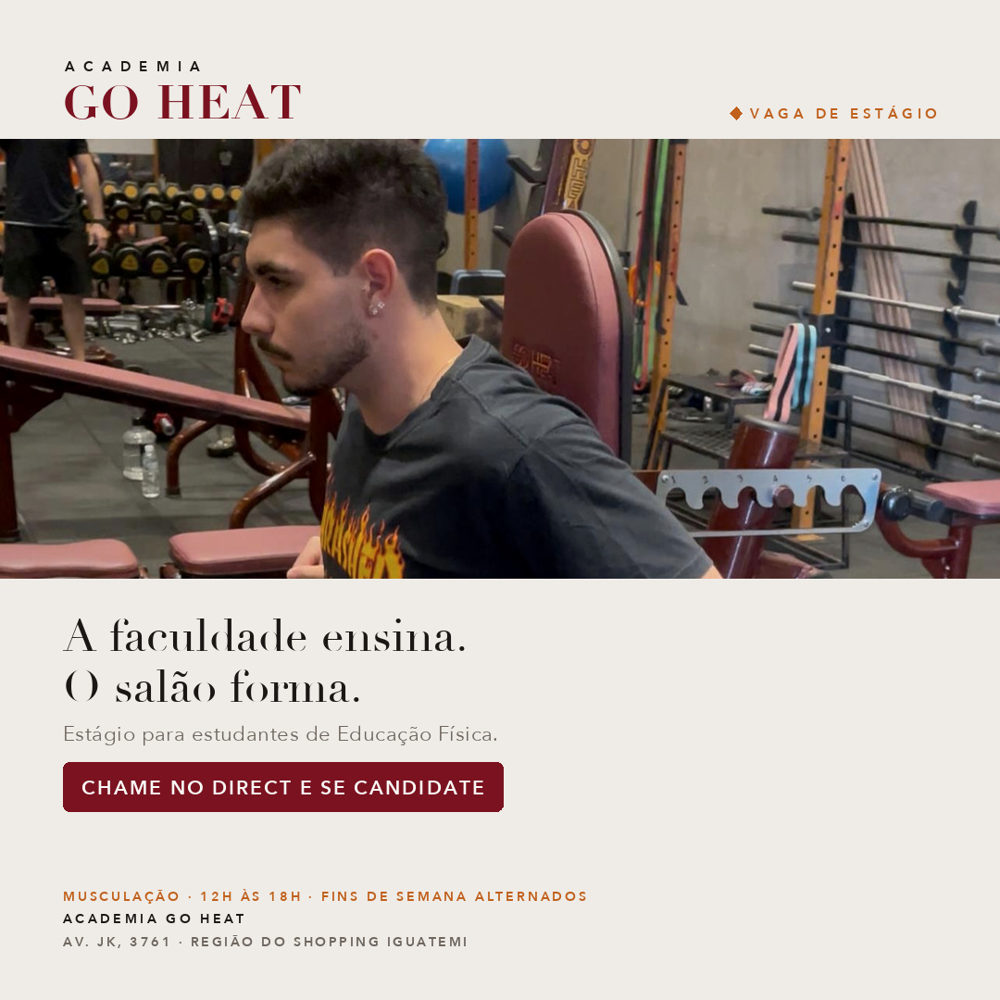
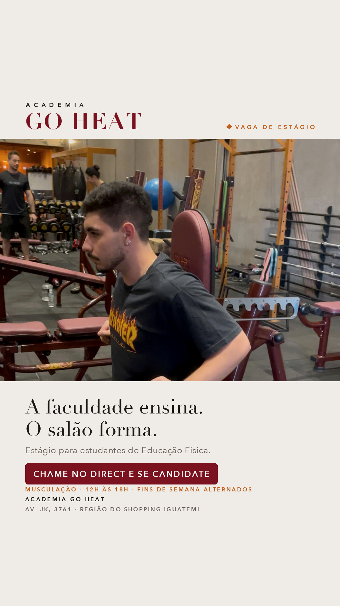
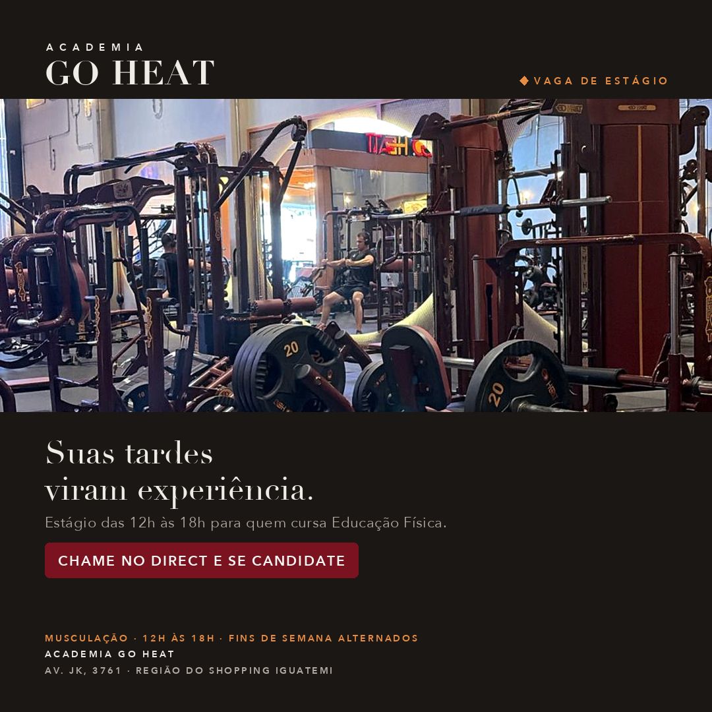
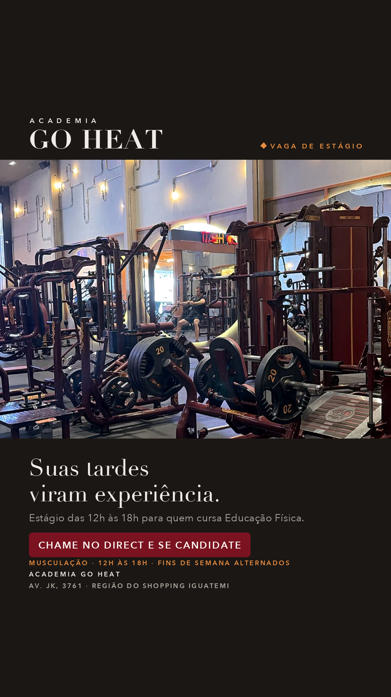

Academia Go Heat · Outubro 2026
Cinco caminhos diferentes para a mesma vaga, cada um com a versão do feed (quadrada) e a do story. Escolham as que podem ir para o ar. Podem aprovar mais de uma: a ideia é rodar juntas e manter a que trouxer mais candidatos.
Todas convidam a pessoa a chamar no Direct para se candidatar, que é onde a campanha recebe as conversas. As fotos são do salão da própria academia.
Mostra o trabalho de verdade: professor orientando aluno na máquina. Quem vê já se imagina na função.


Direta, tipo comunicado. O salão inteiro na foto mostra o tamanho da academia onde o estudante vai trabalhar.


Começa com uma pergunta que só o público certo responde “sim”. Filtra quem não é estudante logo na primeira linha.


Fala da vontade do estudante de sair da teoria e ganhar prática. Frase curta, de efeito.


Versão escura, para se destacar no meio do feed. Puxa pelo horário: quem estuda de manhã ou à noite tem a tarde livre.

